Autres documents
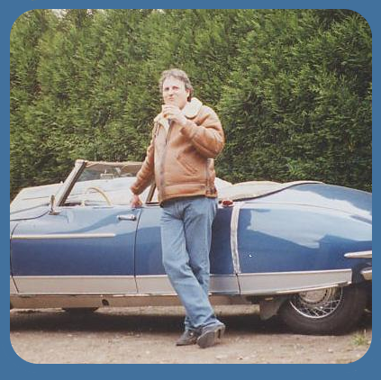
Des chiffres fantaisistes circulent sur les DS produites par la carrosserie Chapron. Outre la fourniture de chiffres volontairement faux par celle-ci, le problème est compliqué parce qu'il n'y a pas vraiment de logique dans l'évolution des productions. Parfois, les clients voulaient garder l'ancienne forme, parfois ils ne voulaient pas de décorations, parfois au contraire ils faisaient moderniser leur voiture, avant où après la mise en service. Et parfois encore, c'est Chapron qui modernisait les voitures pour arriver à les vendre. De plus, certaines voitures sont inclassifiables. Comme vous avez lu la page précédente, vous savez qu'il y a eu sept versions successives de carrosseries de DS chez Chapron, déclinées en berlines, coupés et cabriolets. En plus de la forme, la structure est différente.
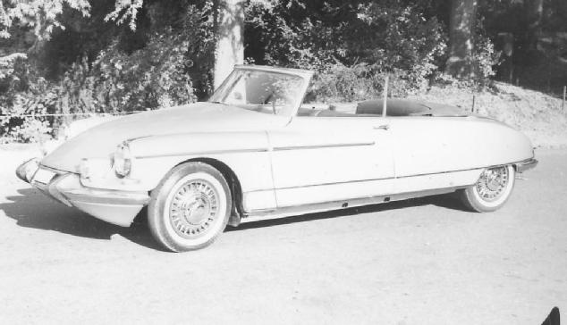1ère version:ailes arrières démontables, panneau intermédiaire métallique fixe, coffre bombé. 2ème version: ailes arrières fixes ajourées, panneau intermédiaire fixe en plastique, coffre légérement bombé. 3ème version: ailes arrières soudées avec le panneau arrière, coffre légérement bombé. 4ème version: ailes arrières soudées, coffre plat. 5ème version: ailes arrières hautes (type cabriolet usine). 6ème version: ailes arrière saillantes. 7ème version: ailes arrières et coffre carrés.
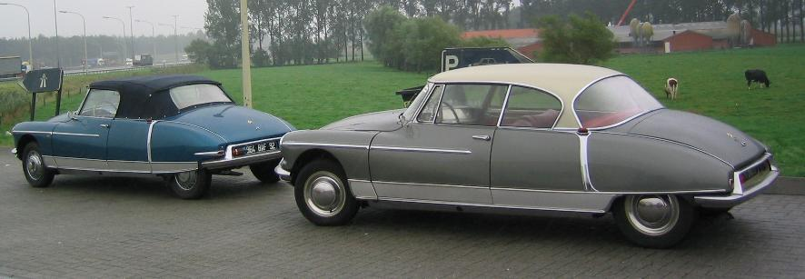Après étude des registres de la carrosserie Chapron et examen des voitures survivantes, la production s'établirait au tableau à gauche. A ces voitures, il faut rajouter des prototypes réalisés pour Citroën et quelques réalisations spéciales comme la DS présidentielle, le cabriolet rallongé du roi du Maroc ou la DS antichoc avec roue de secours faisant office de pare-choc.
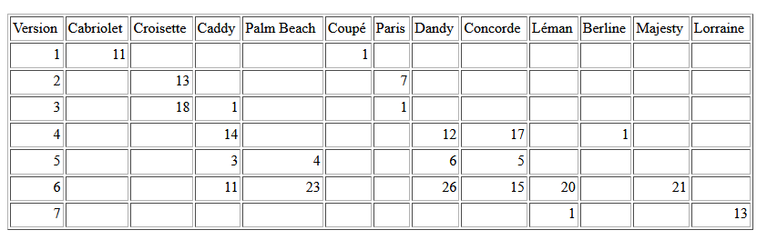Tout d'abord un rappel sur les arrières des berlines d'usine. Au commencement était:
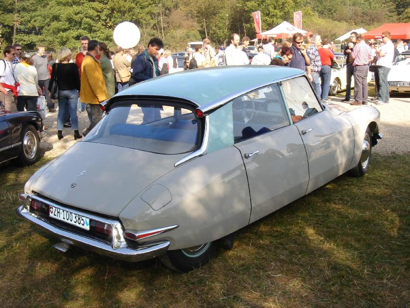Dans la première version (avant 60), l'aile est plus courte et plus carrée. Les ailes et le coffre sont alignés. Dans la deuxième version, l'aile est plutôt alignée sur le pare-choc et dépasse du coffre.
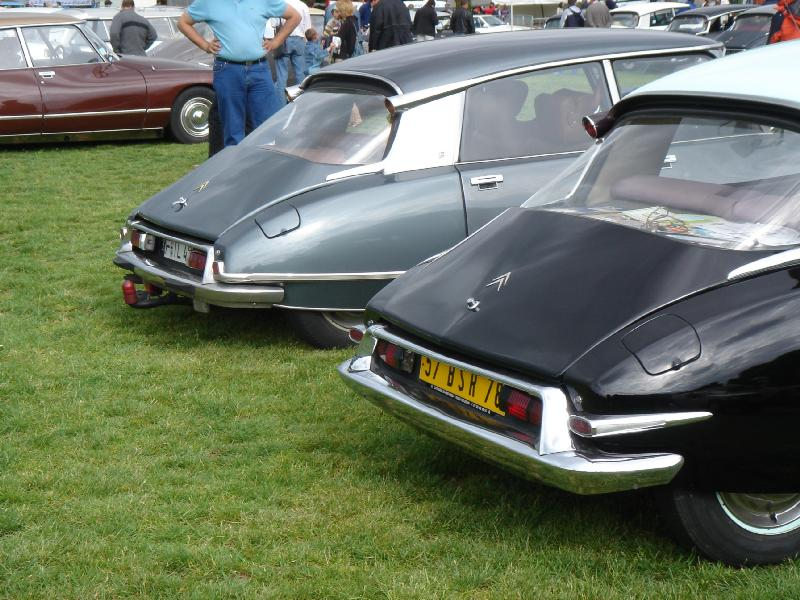Sur les premiers cabriolets et coupé Chapron, l'aile de la berline (première version) a été conservée telle quelle. elle est toujours démontable pour permettre le changement de roue. La porte de coffre est alignée sur les ailes. Son arrondi prolonge les hauts des ailes. Les panneaux de fermeture, les ailes et la porte de malle sont en tôle.
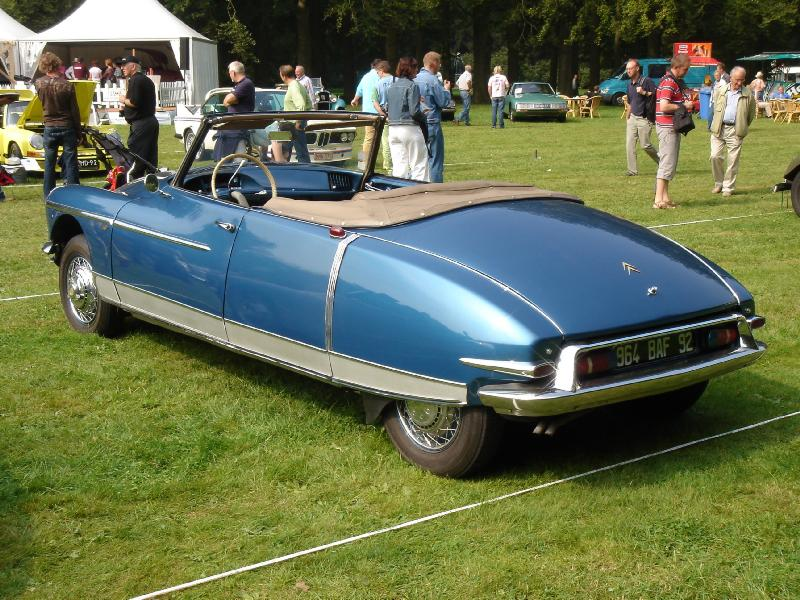Cet exemplaire a été modernisé fin 59 avec les nouvelles ailes de berline, mais elles restent courtes. La porte de malle (qui garde la même forme) est maintenant en plastique.
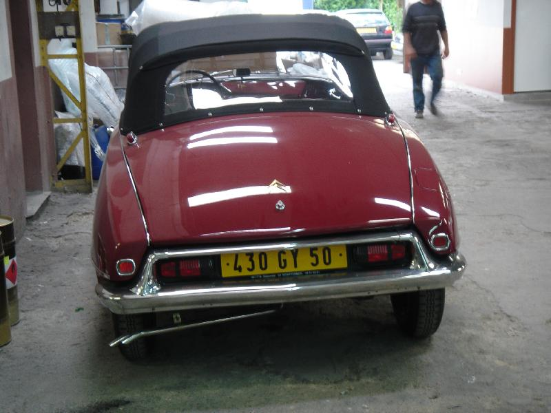Avec l'arrivée des nouvelles ailes fin 59, Chapron adapte son dessin pour les intégrer, en les ajourant pour permettre le changement de roue sans démontage de l'aile. Le panneau de fermeture latérale est en plastique, ainsi que la porte de malle, qui est plus aplatie. Les ailes débordent de la porte.
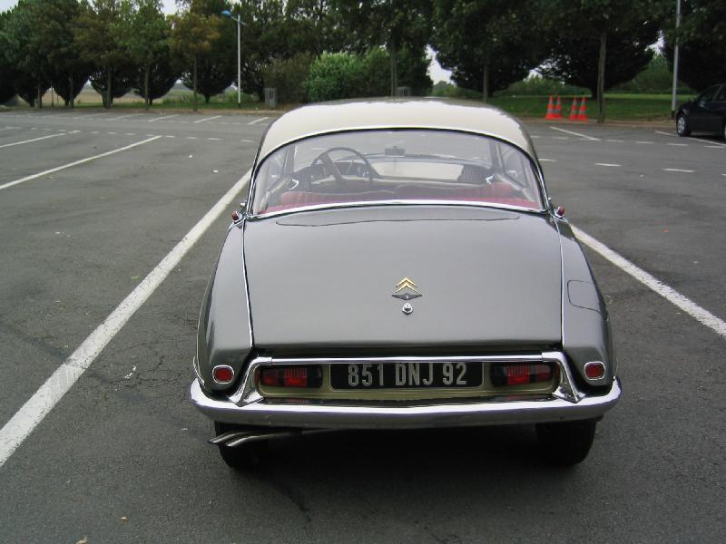Citroën soustraite à Chapron la fabrication du cabriolet usine. La construction de son arrière est différente, monobloc. Et l'aile arrière est plus haute à son extrémité. Notez la hauteur du panneau au dessus du parechoc:
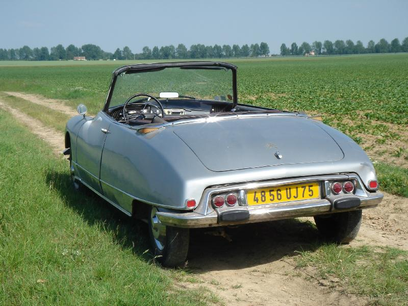Chapron adapte cette forme d'aile à ses carrosseries. Cela nécessite une modification de l'arrière de la porte de coffre qui est remontée d'autant:
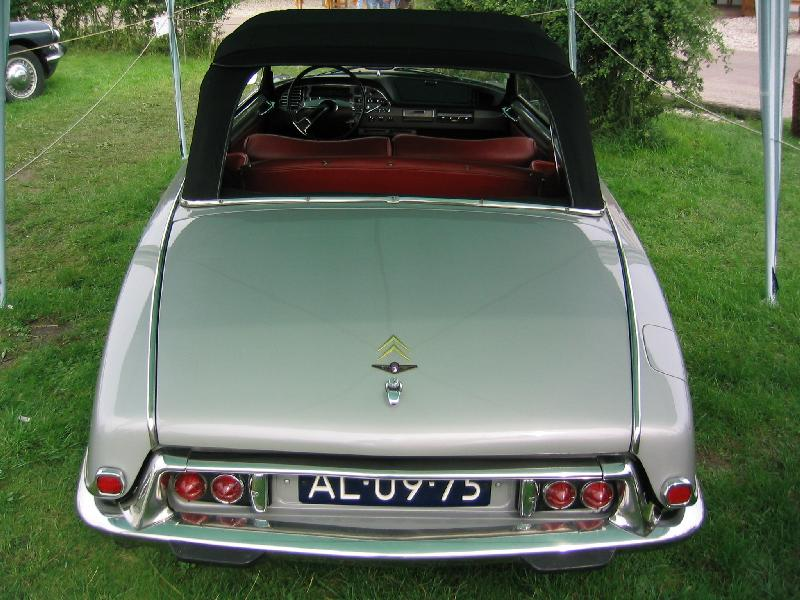Et puis viennent les ailes saillantes, pour faire plus moderne. La porte de coffre remonte encore un peu:
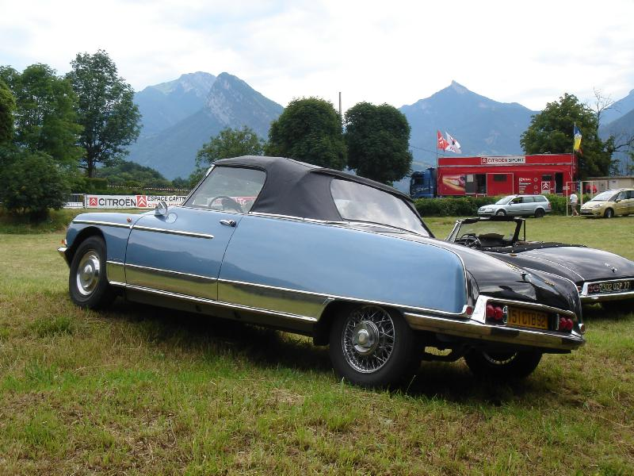